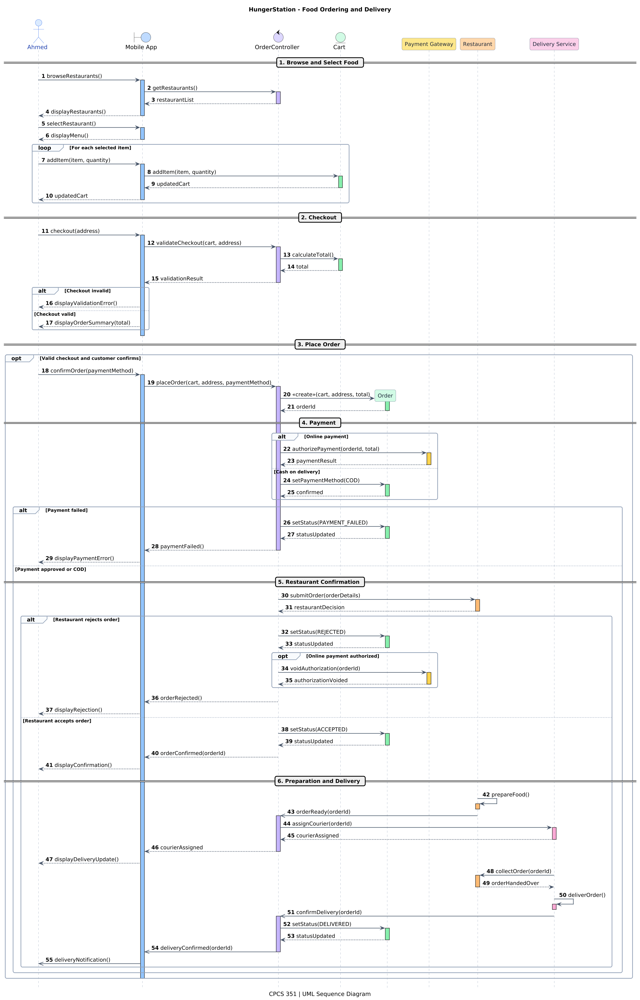
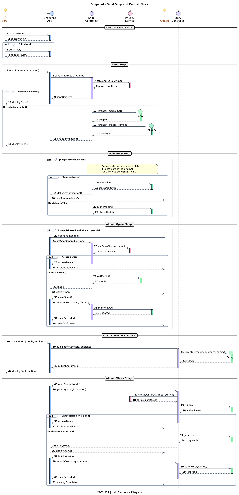

Real-World Sequence Diagram Case Studies
Follow how objects collaborate over time in HungerStation and Snapchat. Read the scenario first, then trace messages, decisions, activations, and object creation.
Identify actors, boundary/control/entity lifelines, synchronous messages, dashed replies, execution specifications, and UML combined fragments (alt, opt, loop). Explain how object interactions realize a use-case scenario, and distinguish successful, alternative, and conditional flows.
How to read these diagrams
Time flows from top to bottom. Participants are arranged horizontally; messages connect lifelines. Solid-line arrows typically show calls; dashed arrows show returns. An open arrowhead may indicate an asynchronous message. Thin rectangles indicate execution/activation. alt separates mutually exclusive guarded paths, opt marks conditional behavior, and loop indicates repetition.
HungerStation — Food Ordering and Delivery
Scenario: Ahmed chooses a restaurant, adds two burgers to his cart, selects a delivery address, places an order, chooses online payment or cash on delivery, and follows the order through restaurant acceptance and delivery.
Order.
Select the diagram to open its full-resolution image. On narrow screens, scroll horizontally to follow the lifelines.

Trace the interaction
- Browse and build the cart: Ahmed uses the app; the controller returns restaurant data and the cart records each chosen item inside a
loop. - Validate checkout: the controller requests the cart total. The
altfragment distinguishes valid from invalid checkout. - Create and pay: after confirmation, the controller creates
Order. Payment follows the online/COD alternative; payment failure does not lead to restaurant fulfillment. - Accept and deliver: the restaurant accepts or rejects the request. On acceptance, the delivery service collects the food and later confirms delivery.
What to observe
- Actor → boundary → control: Ahmed interacts with the app, which delegates application logic to an order controller.
- Object creation: The
Orderlifeline begins at the<<create>>message;Cartalready exists. - Guarded paths: Payment approved/declined and restaurant accepted/rejected are alternative outcomes, not consecutive steps.
- Optional/repeated behavior: Adding cart items repeats in a
loop; placing an order requires a valid checkout. - State transitions: An accepted order progresses through preparation, pickup, transit and delivery.
Order only after checkout validation? What happens after a declined payment?Snapchat — Send Snap and Publish Story
Scenario: Sara captures and optionally edits a photo, then attempts to send it to Ahmed. In a separate interaction, Sara publishes a Story. Ahmed may open either item only when the relevant access rules allow it.
Snap and the recipient-specific delivery record.
On a small screen, scroll horizontally inside the diagram. Open the full-resolution version to zoom into individual messages.

Trace the interaction
- Prepare: Sara captures a photo and may edit it using an
optfragment. - Send: the app delegates to
SnapController, which checks permissions before creatingSnapandSnapDelivery. - Deliver and open: delivery and viewing are separate events. Ahmed's access is checked before the media is returned.
- Publish a Story: Sara starts a separate publication interaction. Story viewing requires both authorization and an active, unexpired Story.
What to observe
- Separate actors: Sara sends content while Ahmed receives and views it.
- Optional editing: The
optfragment runs only if Sara edits the Snap. - Recipient authorization: Communication and Story visibility depend on permission checks.
- Delivery versus viewing: A delivered Snap is not necessarily viewed. The
SnapDeliveryrecord stores recipient-specific delivery and view status. - Story lifecycle: The Story's availability depends on its expiration time; viewing it does not itself cause expiration.
SnapDelivery record required for each recipient?Same UML language, different responsibilities
| Concept | HungerStation | Snapchat |
|---|---|---|
| Primary interaction | Place and fulfill an order | Send and view a Snap |
| Central entity | Order | Snap |
| Supporting entity | Cart | SnapDelivery |
| Alternative flow | Payment approval or rejection | Permission granted or denied |
| Optional flow | Confirm order only after valid checkout | Edit Snap |
| Key responsibility | Preserve order and payment consistency | Preserve per-recipient state and privacy |
For each message, identify the sender, receiver, and responsibility. Check that calls and returns align with execution bars; object lifelines start at creation. Use alt for mutually exclusive outcomes, opt for conditional behavior, and loop for repetition. Never continue a failed path as if it succeeded.